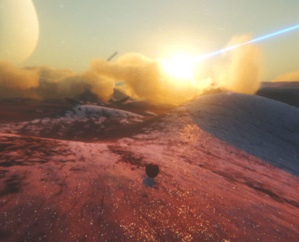

La Fin
La fin est, comme à l'image du jeu, époustouflante, bien que le jeu soit un peu court et nous donne l'envie d'une suite
Avez vous aimé cet article?
Cliquez sur Oui ou Non pour émettre votre avis.
EXO ONE
est un jeu développé par Exbleative, un développeur indépendant australien, qui sort son premier jeu sous ce nom.
le jeu est édité par Future Friends Game
, et sors le 18 novembre 2021 sur Steam,
Xbox (ainsi que l'app Xbox sur PC) et l'Epic Games Store.
Le jeu est disponible sur ces plateformes au prix (plutôt justifié comme nous le verrons) de 16,99€.
Il n'y a pas à dire, Exo One est un jeu magnifique, voire époustouflant. Les détails, l'ambiance lumineuse, les effets, tout.
|  |
Il suffit de seulement écouter la soundtrack du jeu pour la trouver incroyable, alors imaginez quand vous êtes pris dans le jeu avec cette dernière...
“Le jour de l’anniversaire de l’accident de Jupiter, un signal extraterrestre transmet à l’humanité les plans de construction d’un vaisseau alien. Une fois construit, celui-ci est baptisé…"
Le joueur incarne un vaisseau spatial qui peut se changer en deux formes : une boule et un disque. Dans le premier cas, l’appareil est violemment attiré au sol, utilisant le relief des planètes (une dizaine au total) pour prendre de la vitesse, qu’il soit sur terre ferme ou bien en l’air.
La seconde permet de planer quelques instants, en tout cas jusqu’à ce que l’énergie de l’appareil soit épuisée et qu’il faille retourner en sphère pour en regagner, et répéter l’opération. Il est aussi possible de ‘sauter’ deux fois, en boule ou disque, pour modifier sa trajectoire. Un pouvoir qui se retrouve au contact du sol. Certaines zones offrent des portails pour démultiplier votre rapidité.
La fin est, comme à l'image du jeu, époustouflante, bien que le jeu soit un peu court et nous donne l'envie d'une suite
Cliquez sur Oui ou Non pour émettre votre avis.